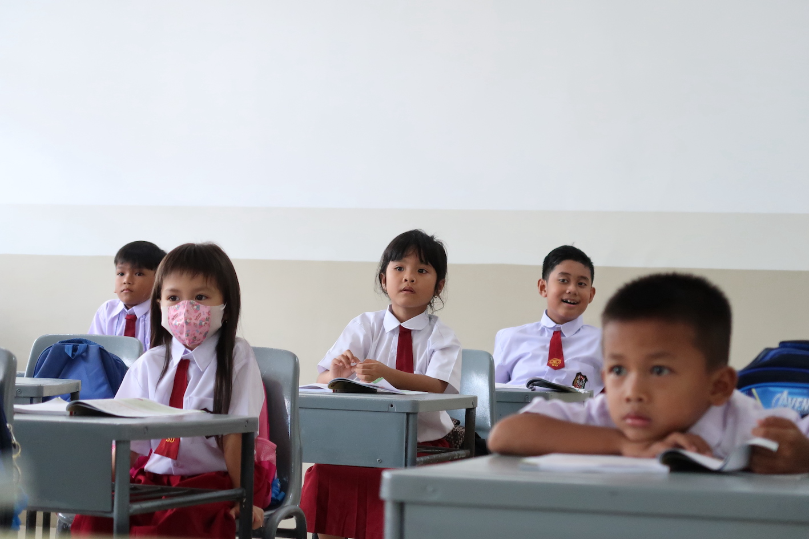

THE GREAT JOURNEY OF
 Jakarta, Indonesia 🇮🇩
Jakarta, Indonesia 🇮🇩
 Indonesia 🇮🇩
Indonesia 🇮🇩
 Indonesia 🇮🇩
Indonesia 🇮🇩
My School Days!
Selamat datang di petualangan belajarku! Yuk, intip perjalanan seru dari masa kecil sampai sekarang ✨
2005 - 2011

Jakarta, Indonesia 🇮🇩
SEKOLAH DASAR
SD Negeri Nusantara 01
Masa awal eksplorasi dunia akademis dengan fokus pada pengembangan karakter dan dasar-dasar sains.
2011 - 2014
Jakarta, Indonesia 🇮🇩
SEKOLAH MENENGAH PERTAMA
SMP Negeri 1 Indonesia
Mulai tertarik dengan logika, teknologi, dan kerja tim melalui berbagai kegiatan.
2014 - 2017
Indonesia 🇮🇩
SEKOLAH MENENGAH KEJURUAN
SMK Teknologi Nusantara
Mulai serius mendalami jaringan komputer, troubleshooting, dan praktik langsung.
2017 - Sekarang
Indonesia 🇮🇩
PERGURUAN TINGGI
Universitas Teknologi
Fokus pada pengembangan skill profesional di bidang IT, web, dan jaringan.